QC and Sample Size Estimation
Witold E. Wolski
2026-06-22
Source:vignettes/QualityControlAndSampleSizeEstimation.Rmd
QualityControlAndSampleSizeEstimation.RmdPurpose
This vignette demonstrates how the package can be used to create descriptive statistics or quality control plots for a dataset. First, we read a “proteinGroups.txt” file from the MaxQuant software, and next, we specify a prolfqua configuration. Afterward, the data is transformed and normalized, and plots describing the data are generated. Finally, we estimate how many samples are necessary to properly quantify a two-fold change for of all the proteins with a power of .
Loading data
Generate Simulated data. To learn how to create prolfqua LFQData objects see the vignette: creating configurations.
simdata <- prolfqua::sim_lfq_data_peptide_config()
lfqdata <- prolfqua::LFQData$new(simdata$data,simdata$config)
lfqdata$remove_small_intensities()You can convert the data into a data frame in a wide format, where the intensities of each sample occupy their columns.
lfqdata$data_wide()$data[1:3,1:8]## # A tibble: 3 × 8
## protein_Id peptide_Id isotopeLabel A_V1 A_V2 A_V3 A_V4 B_V1
## <chr> <chr> <chr> <dbl> <dbl> <dbl> <dbl> <dbl>
## 1 0EfVhX~0087 ahQLlQY7 light 26.9 25.2 26.1 25.2 26.1
## 2 0EfVhX~0087 dJkdz7so light NA 16.1 14.7 NA 25.7
## 3 0EfVhX~0087 ITLb4x1q light 19.4 NA 18.2 18.9 28.9Visualization of not normalized data
Next we show how the data is distributed before transformation and normalization.
lfqplotter <- lfqdata$get_Plotter()
lfqplotter$intensity_distribution_density()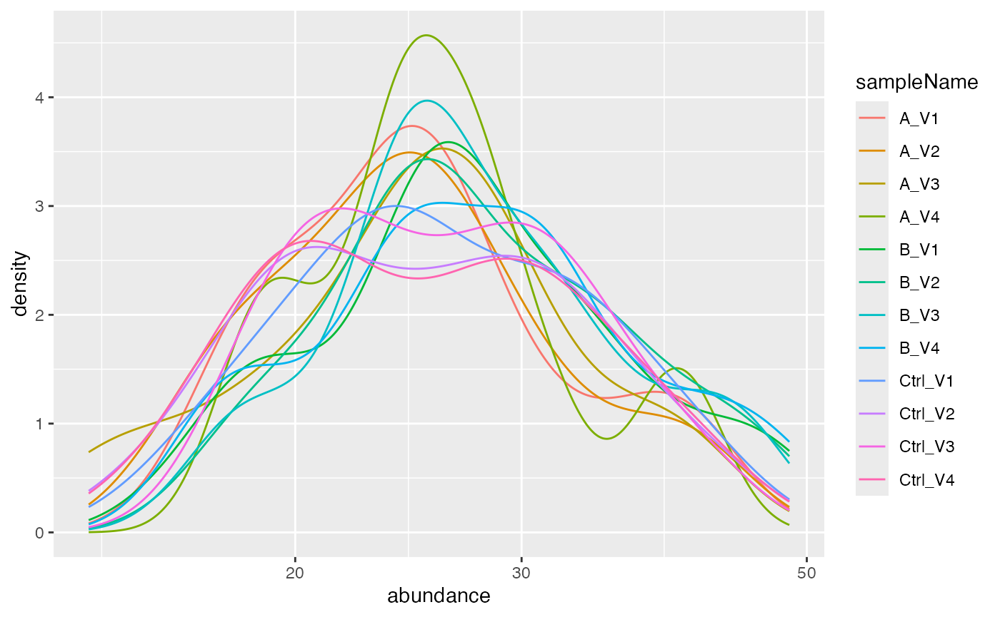
Visualization of missing data
Often it also makes sense to look into the part of the data that is
not quantified in all samples. Therefore several functions for the
missingess are available. In the NA_heatmap function it is
possible to see if some missing proteins are specific for one particular
dilution or if they appear randomly in all samples.
nah <- lfqplotter$na_heatmap()Prints missing heatmap:
nah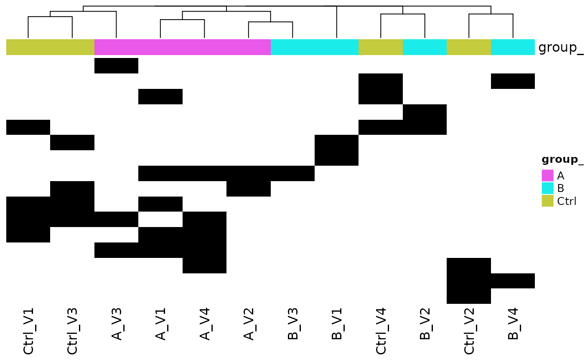
Heatmap, black - missing protein intensities, white - present
Also in the next two figures we show how many missing values are found in the respective conditions and how many proteins do not have missing data and how complete the measurements are for each group.
lfqdata$get_Summariser()$plot_missingness_per_group()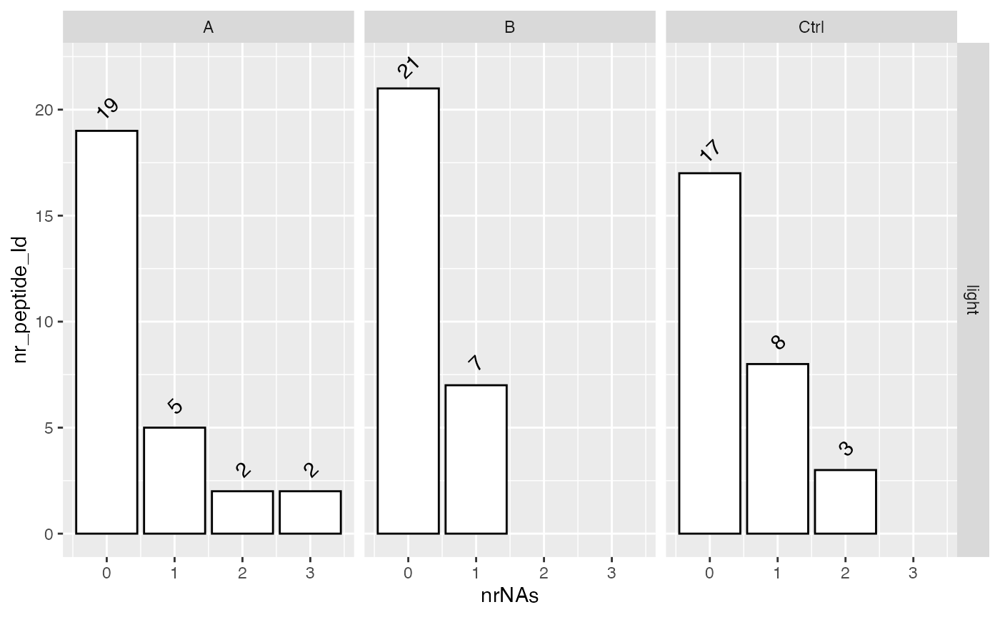
# of proteins with 0,1,…N missing values
lfqdata$get_Summariser()$plot_missingness_per_group_cumsum()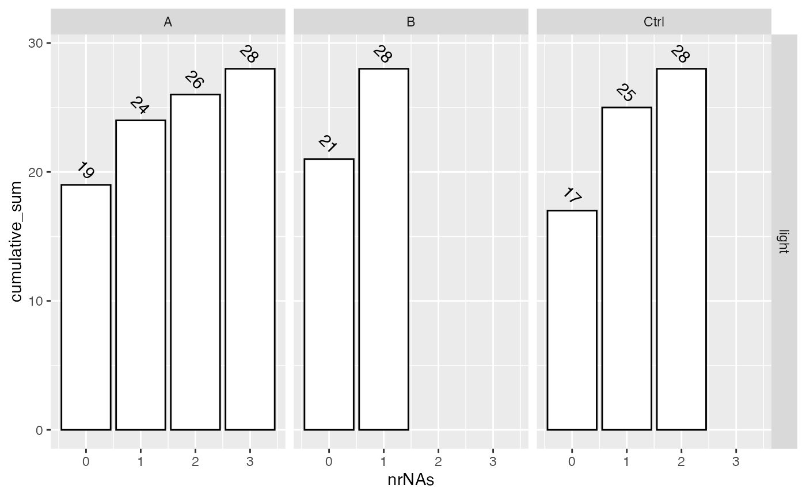
Cumulative sum of the # of proteins with 0,1,…N missing values
In the missigness_histogram we can check if there is a
dependency between NAs (and the number of NAs for earch protein) with
respect to the protein intensity.
lfqplotter$missigness_histogram()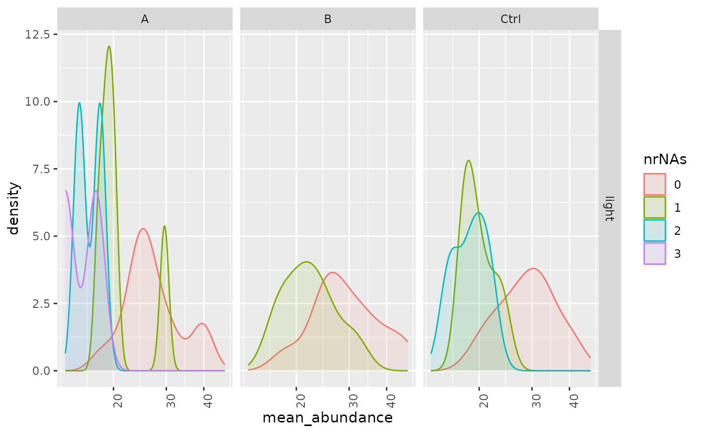
Intensity distribution of proteins depending on # of missing values
Computing standard deviations, mean and CV.
Other important statistics that can be easily calculated from the object are coefficient of variation, means and standard deviations.
stats <- lfqdata$get_Stats()
prolfqua::table_facade( stats$stats_quantiles()$wide, paste0("quantile of ",stats$stat ))| probs | A | B | Ctrl | All |
|---|---|---|---|---|
| 0.10 | 1.215060 | 1.236542 | 1.129780 | 7.185163 |
| 0.25 | 2.442726 | 1.999453 | 1.607515 | 12.277918 |
| 0.50 | 3.418211 | 3.026062 | 3.349758 | 15.169313 |
| 0.75 | 4.599101 | 4.155821 | 4.885600 | 19.467593 |
| 0.90 | 6.349093 | 5.322302 | 6.008022 | 21.451325 |
stats$density_median()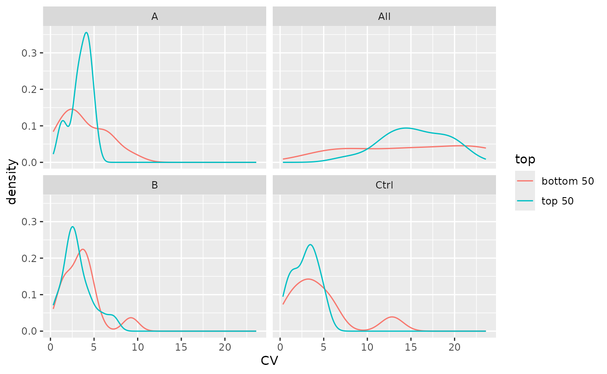
Distribution of CV’s
In the next figure we show the dependency of the standard deviation with respect to the mean intensitiy of the proteins.
stdm_raw <- stats$stdv_vs_mean(size = 10000) +
ggplot2::scale_x_log10() +
ggplot2::scale_y_log10()
stdm_raw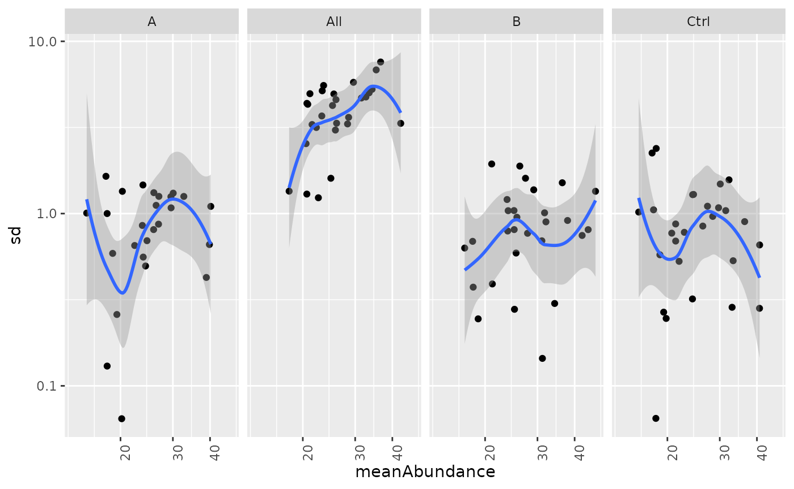
Scatter plot of standard deviation vs mean
Normalize protein intensities
Next, we want to normalize the data by first transforming it and then z-scaling. The stabilizes the variance, while the z-scaling removes systematic differences from the samples.
lt <- lfqdata$get_Transformer()
transformed <- lt$log2()$robscale()$lfq
transformed$is_transformed()## [1] TRUEAgain we want to look into the distribution of the intensities in our samples after normalization.
pl <- transformed$get_Plotter()
pl$intensity_distribution_density()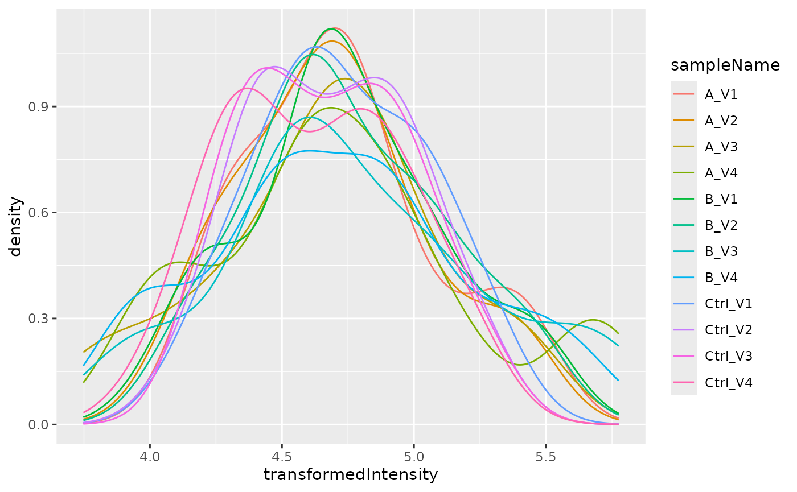
Normalized intensities.
plots matrix scatter plot in the upper right matrix and some statistics in the lower left matrix.
pl$pairs_smooth()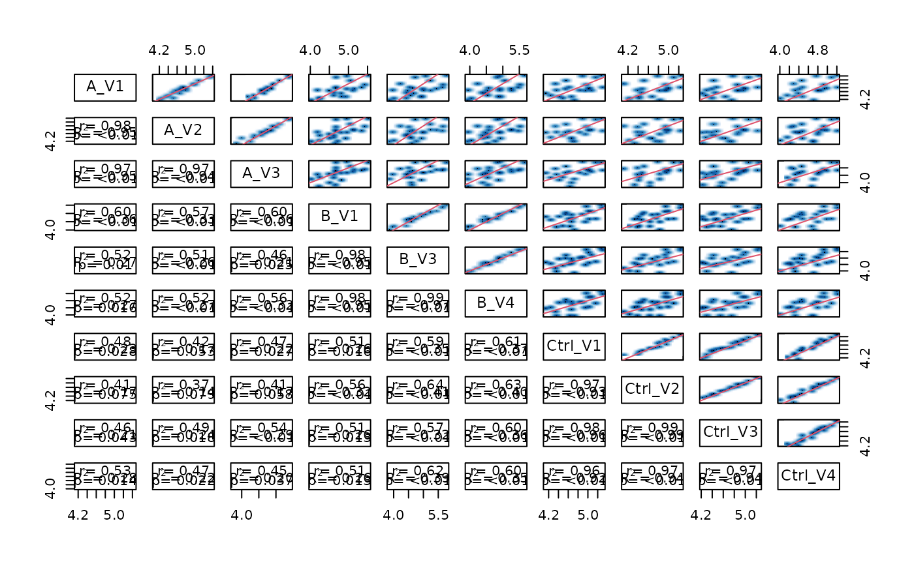
Scatterplot matrix
## NULLplots protein heatmap:
p <- pl$heatmap()
p 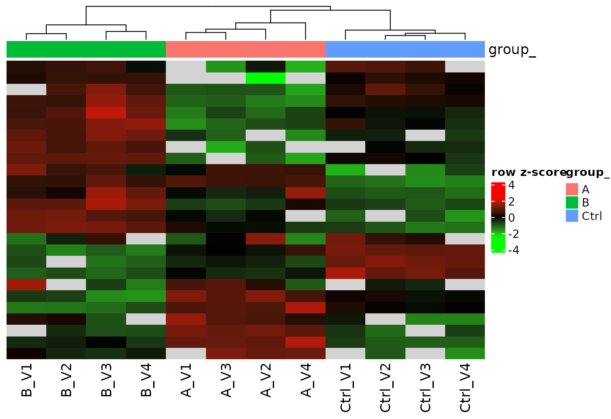
Heatmap, Rows - proteins, Columns - samples
We can also look at the correlation among the samples or look at a PCA plot.
hc <- pl$heatmap_cor()
hc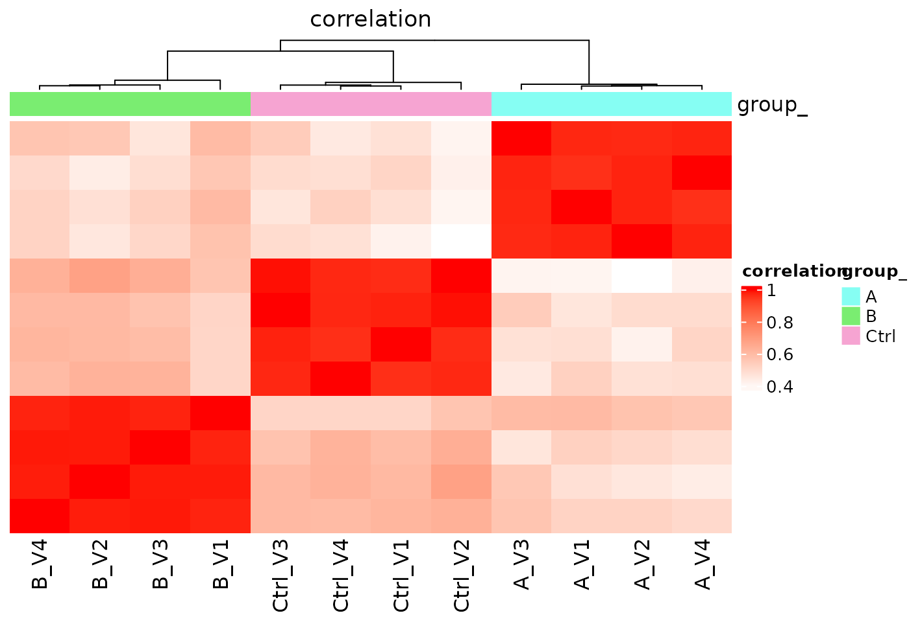
Heatmap based on sample correlations, Rows - samples, Columns - samples
pl$pca()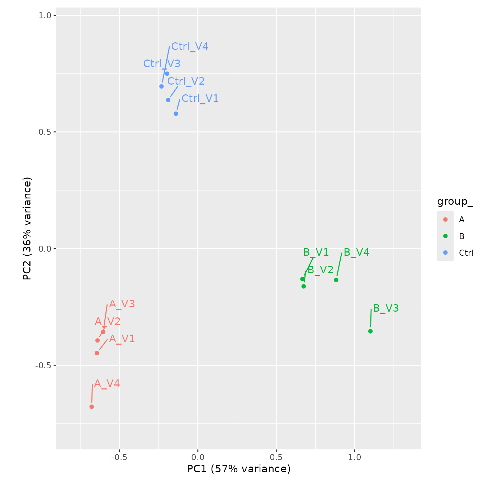
Principal component analysis for all samples
prints the standard deviations:
stats <- transformed$get_Stats()
prolfqua::table_facade(stats$stats_quantiles()$wide, "Standard deviations")| probs | A | B | Ctrl | All |
|---|---|---|---|---|
| 0.10 | 0.0355196 | 0.0325012 | 0.0294799 | 0.1152932 |
| 0.25 | 0.0587524 | 0.0582281 | 0.0422670 | 0.1677154 |
| 0.50 | 0.0717438 | 0.0853025 | 0.0566645 | 0.2345489 |
| 0.75 | 0.1240478 | 0.1209993 | 0.0720238 | 0.3004859 |
| 0.90 | 0.1687990 | 0.1388753 | 0.1087199 | 0.3253740 |
plots density of the standard deviation
stats$density_median()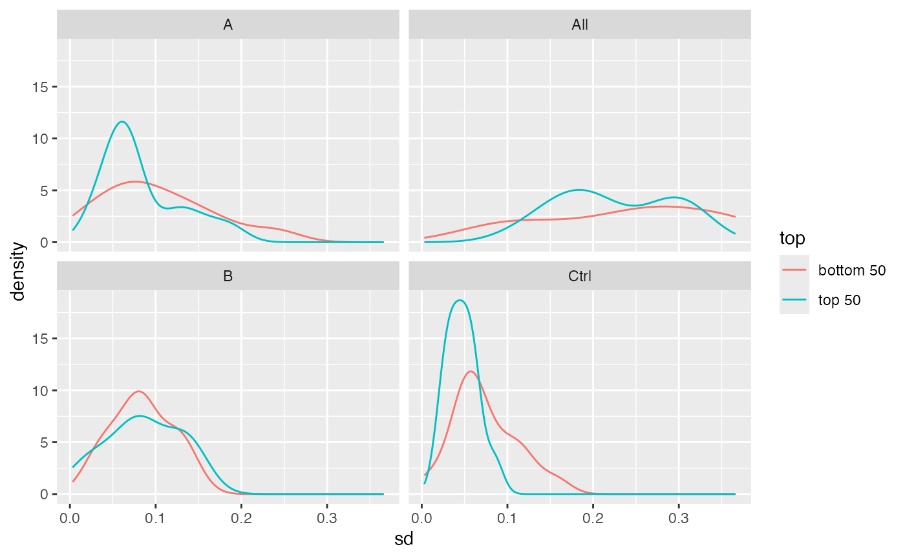
Density of the standard deviation
Check for heteroskedasticity. After transformation, the standard deviation should be independent of the mean intensity.
stdm_trans <- stats$stdv_vs_mean(size = 10000) + ggplot2::scale_x_log10() + ggplot2::scale_y_log10()
stdm_trans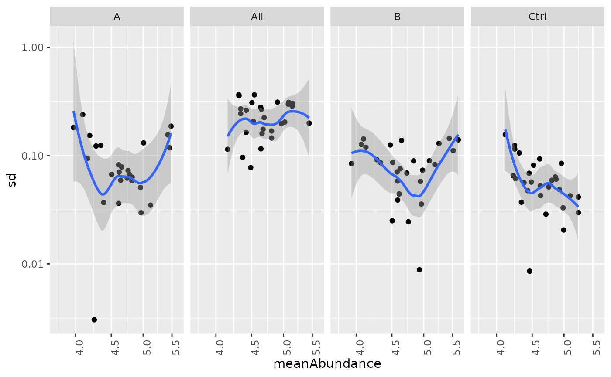
Scatter plot of sd vs mean of protein intensity
#gridExtra::grid.arrange(stdm_raw, stdm_trans, nrow=1)Estimate sample size
For the sample size estimation we will now focus on only one condition and the different bio-reps from the a group In this condition all samples have the same concentration and we want to check variability within this group. Like this we can estimate how many samples are necessary per group to quantify properly a two-fold change (delta of 1) for 90% of all the proteins with a power of 0.8 and significance level of 0.05.
First, we need to filter our data for group_ A
only.
transformedA <- transformed$get_copy()
transformedA$set_data(transformedA$data_long() |> dplyr::filter(group_ == "A"))
stats <- transformedA$get_Stats()
stats$density(ggstat = "ecdf")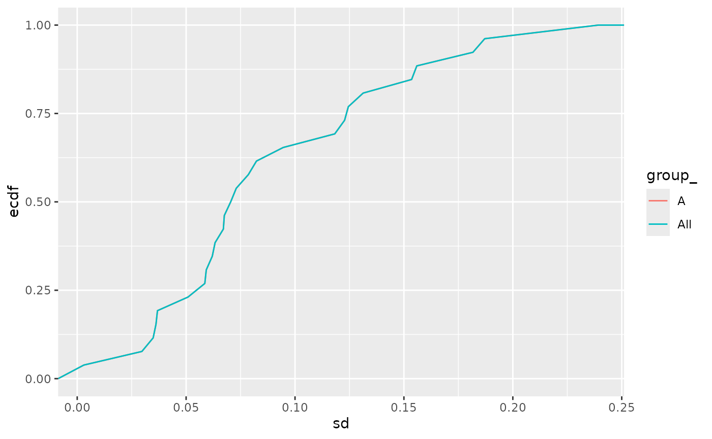
Empirical cumulative density function of the standard deviation for all the proteins in the dataset.
The table indicates that for this kind of data - if a two-fold change for 90% of all the proteins should be accurately quantified with a power of 0.8 (at 0.05 significance level) one would need to have 10 samples in each group.
sampleSize <- stats$power_t_test_quantiles() |>
dplyr::filter(group_ != "All")
prolfqua::table_facade(sampleSize, "Sample sizes. delta - Effect size, N - samplesize")| group_ | probs | quantiles | sdtrimmed | N_exact | N | delta |
|---|---|---|---|---|---|---|
| A | 0.10 | 0.0355196 | 0.0355196 | 1.526948 | 2 | 0.59 |
| A | 0.25 | 0.0587524 | 0.0587524 | 1.673109 | 2 | 0.59 |
| A | 0.50 | 0.0717438 | 0.0717438 | 1.758418 | 2 | 0.59 |
| A | 0.75 | 0.1240478 | 0.1240478 | 2.172950 | 3 | 0.59 |
| A | 0.90 | 0.1687990 | 0.1687990 | 2.671229 | 3 | 0.59 |
| A | 0.10 | 0.0355196 | 0.0530265 | 1.500024 | 2 | 1.00 |
| A | 0.25 | 0.0587524 | 0.0587524 | 1.521541 | 2 | 1.00 |
| A | 0.50 | 0.0717438 | 0.0717438 | 1.569649 | 2 | 1.00 |
| A | 0.75 | 0.1240478 | 0.1240478 | 1.768204 | 2 | 1.00 |
| A | 0.90 | 0.1687990 | 0.1687990 | 1.961551 | 2 | 1.00 |
| A | 0.10 | 0.0355196 | 0.1060530 | 1.500024 | 2 | 2.00 |
| A | 0.25 | 0.0587524 | 0.1060530 | 1.500024 | 2 | 2.00 |
| A | 0.50 | 0.0717438 | 0.1060530 | 1.500024 | 2 | 2.00 |
| A | 0.75 | 0.1240478 | 0.1240478 | 1.533718 | 2 | 2.00 |
| A | 0.90 | 0.1687990 | 0.1687990 | 1.616344 | 2 | 2.00 |
The table summarises visually how many samples are needed for different expected differences (in log2-scale) and different portions of all proteins.
sampleSize |>
ggplot2::ggplot(ggplot2::aes(x = factor(probs) , y = N)) +
ggplot2::facet_wrap(~delta) +
ggplot2::geom_bar(stat = "identity")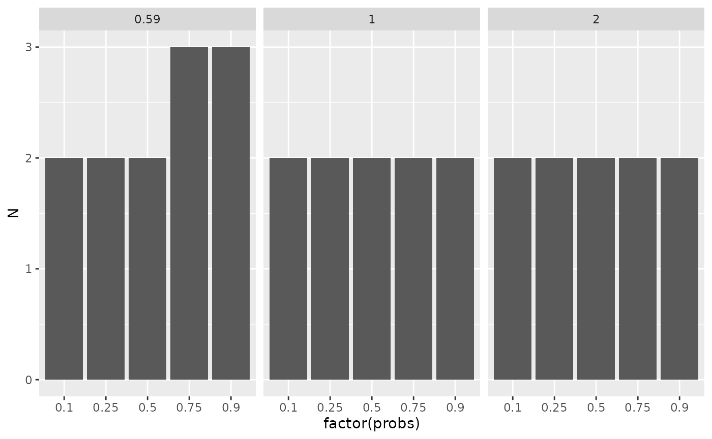
Estimated sample sizes for various FC levels and various quantiles of the standard deviation.
It is also possible to get the statistics for each protein in each group. The information includes group size, number of observations, standard deviation, variance, mean.
stats$stats() |> head()## # A tibble: 6 × 12
## protein_Id peptide_Id isotopeLabel group_ nrReplicates nrMeasured nrNAs
## <chr> <chr> <chr> <chr> <int> <int> <int>
## 1 0EfVhX~0087 ITLb4x1q light A 4 3 1
## 2 0EfVhX~0087 ahQLlQY7 light A 4 4 0
## 3 0EfVhX~0087 dJkdz7so light A 4 2 2
## 4 7cbcrd~5725 D5dQ4nKk light A 4 4 0
## 5 9VUkAq~4703 eIC06D7g light A 4 4 0
## 6 BEJI92~5282 HBkZvdhT light A 4 2 2
## # ℹ 5 more variables: sd <dbl>, var <dbl>, meanAbundance <dbl>,
## # medianAbundance <dbl>, interaction <chr>You can also estimate the sample size needed to perform differential
expression analysis for each protein, given the power,
delta, and sig.level. The next figure shows
the distribution of needed sample sizes for all proteins with a power of
0.8 at signifiance level 0.05 for a two fold change (delta = 1).
x <- stats$power_t_test(delta = 1,power = 0.8, sig.level = 0.05)
x <- x |> dplyr::filter(group_ == "A") |> dplyr::arrange(desc(N),protein_Id)
prolfqua::table_facade(x[1:7,], caption = "Sample size for each protein")| protein_Id | peptide_Id | isotopeLabel | group_ | nrReplicates | nrMeasured | nrNAs | sd | var | meanAbundance | medianAbundance | interaction | delta | N_exact | N |
|---|---|---|---|---|---|---|---|---|---|---|---|---|---|---|
| 0EfVhX~0087 | dJkdz7so | light | A | 4 | 2 | 2 | 0.1816806 | 0.0330078 | 3.971469 | 3.971469 | group_A | 1 | 2.023422 | 3 |
| HvIpHG~9079 | opjydeWJ | light | A | 4 | 3 | 1 | 0.2392614 | 0.0572460 | 4.094835 | 3.997946 | group_A | 1 | 2.344670 | 3 |
| JcKVfU~9653 | 9LMQBevj | light | A | 4 | 4 | 0 | 0.1871014 | 0.0350069 | 5.482917 | 5.406550 | group_A | 1 | 2.050429 | 3 |
| 0EfVhX~0087 | ahQLlQY7 | light | A | 4 | 4 | 0 | 0.0620097 | 0.0038452 | 4.742744 | 4.735435 | group_A | 1 | 1.533666 | 2 |
| 0EfVhX~0087 | ITLb4x1q | light | A | 4 | 3 | 1 | 0.1535287 | 0.0235710 | 4.190351 | 4.178250 | group_A | 1 | 1.892113 | 2 |
| 7cbcrd~5725 | D5dQ4nKk | light | A | 4 | 4 | 0 | 0.0508679 | 0.0025875 | 4.956022 | 4.964554 | group_A | 1 | 1.500024 | 2 |
| 9VUkAq~4703 | eIC06D7g | light | A | 4 | 4 | 0 | 0.0945821 | 0.0089458 | 4.159728 | 4.182873 | group_A | 1 | 1.654299 | 2 |
x |> ggplot2::ggplot(ggplot2::aes(x = N)) +
ggplot2::geom_histogram() +
ggplot2::facet_wrap(~delta) +
ggplot2::xlim(0,100)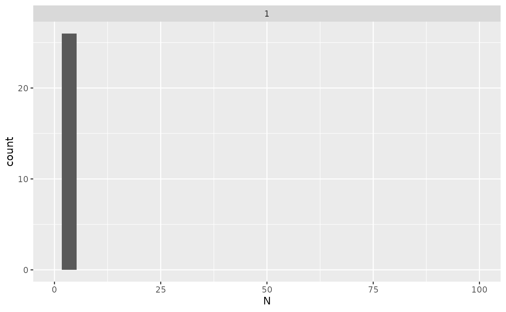
Distribution of the required sample sizes for two fold change thresholds for all the proteins.
The prolfqua package is described in (Wolski et al. 2022).
Session Info
## R version 4.5.2 (2025-10-31)
## Platform: x86_64-pc-linux-gnu
## Running under: Ubuntu 24.04.4 LTS
##
## Matrix products: default
## BLAS: /usr/lib/x86_64-linux-gnu/openblas-pthread/libblas.so.3
## LAPACK: /usr/lib/x86_64-linux-gnu/openblas-pthread/libopenblasp-r0.3.26.so; LAPACK version 3.12.0
##
## locale:
## [1] LC_CTYPE=C.UTF-8 LC_NUMERIC=C LC_TIME=C.UTF-8
## [4] LC_COLLATE=C.UTF-8 LC_MONETARY=C.UTF-8 LC_MESSAGES=C.UTF-8
## [7] LC_PAPER=C.UTF-8 LC_NAME=C LC_ADDRESS=C
## [10] LC_TELEPHONE=C LC_MEASUREMENT=C.UTF-8 LC_IDENTIFICATION=C
##
## time zone: UTC
## tzcode source: system (glibc)
##
## attached base packages:
## [1] stats graphics grDevices utils datasets methods base
##
## loaded via a namespace (and not attached):
## [1] Rdpack_2.6.6 gridExtra_2.3 rlang_1.2.0
## [4] magrittr_2.0.5 clue_0.3-68 GetoptLong_1.1.1
## [7] otel_0.2.0 matrixStats_1.5.0 compiler_4.5.2
## [10] mgcv_1.9-3 png_0.1-9 systemfonts_1.3.2
## [13] vctrs_0.7.3 pkgconfig_2.0.3 shape_1.4.6.1
## [16] crayon_1.5.3 fastmap_1.2.0 backports_1.5.1
## [19] labeling_0.4.3 utf8_1.2.6 rmarkdown_2.31
## [22] nloptr_2.2.1 ragg_1.5.2 UpSetR_1.4.1
## [25] purrr_1.2.2 xfun_0.59 glmnet_5.0
## [28] jomo_2.7-6 logistf_1.26.1 cachem_1.1.0
## [31] jsonlite_2.0.0 pan_1.9 broom_1.0.13
## [34] parallel_4.5.2 cluster_2.1.8.1 R6_2.6.1
## [37] bslib_0.11.0 stringi_1.8.7 RColorBrewer_1.1-3
## [40] limma_3.66.0 boot_1.3-32 rpart_4.1.24
## [43] jquerylib_0.1.4 Rcpp_1.1.1-1.1 iterators_1.0.14
## [46] knitr_1.51 IRanges_2.44.0 Matrix_1.7-4
## [49] splines_4.5.2 nnet_7.3-20 tidyselect_1.2.1
## [52] yaml_2.3.12 doParallel_1.0.17 codetools_0.2-20
## [55] lattice_0.22-7 tibble_3.3.1 plyr_1.8.9
## [58] withr_3.0.3 S7_0.2.2 prolfqua_1.6.3
## [61] evaluate_1.0.5 desc_1.4.3 survival_3.8-3
## [64] circlize_0.4.18 pillar_1.11.1 mice_3.19.0
## [67] KernSmooth_2.23-26 foreach_1.5.2 stats4_4.5.2
## [70] reformulas_0.4.4 plotly_4.12.0 generics_0.1.4
## [73] S4Vectors_0.48.1 ggplot2_4.0.3 scales_1.4.0
## [76] minqa_1.2.8 glue_1.8.1 lazyeval_0.2.3
## [79] tools_4.5.2 data.table_1.18.4 lme4_2.0-1
## [82] forcats_1.0.1 fs_2.1.0 grid_4.5.2
## [85] tidyr_1.3.2 rbibutils_2.4.1 colorspace_2.1-2
## [88] nlme_3.1-168 formula.tools_1.7.1 cli_3.6.6
## [91] textshaping_1.0.5 viridisLite_0.4.3 ComplexHeatmap_2.26.1
## [94] dplyr_1.2.1 gtable_0.3.6 sass_0.4.10
## [97] digest_0.6.39 operator.tools_1.6.3.1 BiocGenerics_0.56.0
## [100] ggrepel_0.9.8 rjson_0.2.23 htmlwidgets_1.6.4
## [103] farver_2.1.2 htmltools_0.5.9 pkgdown_2.2.0
## [106] lifecycle_1.0.5 httr_1.4.8 GlobalOptions_0.1.4
## [109] mitml_0.4-5 statmod_1.5.2 MASS_7.3-65